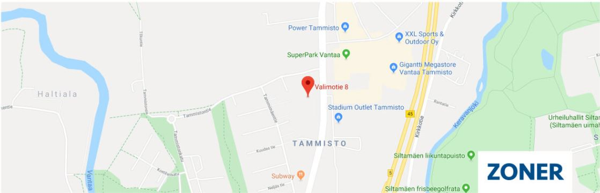

Slaavit asuttivat nykyisen Montenegron alueen 600-luvulla. Alueelle muodostui 900-luvulla Zetan-valtio Ceslav-nimisen päällikön (zupan) yhdistettyä alueen. Alue oli vuosisatoja nimellisesti Serbian maakunta, mutta osmanien kukistaessa Serbian vuonna 1389 alueesta tuli täysin itsenäinen. Aluksi maata hallitsi Balsan ruhtinassuku, jota seurasi vuonna 1421 Crnojevićin dynastia perustajanaan Stefan Crnojević. Hänen seuraajiensa aikana Montenegron hovi saavutti maan pienuuteen ja karuuteen nähden varsin korkean kulttuuritason, ja vuonna 1493 siellä painatettiin ensimmäiset kyrillisin kirjaimin kirjoitetut tekstit. Vuodesta 1516 Montenegroa hallitsi Cetinjen ruhtinaspiispa (vladika) viimeisen Crnojević-sukuisen ruhtinaan Đurađ V Crnojevićin luovuttua vallasta ja lähdettyä Venetsiaan. Tämä hallintomuoto oli tehokas tapa pitää ortodoksiset montenegrolaisylimykset yhtenä miehenä islamilaisia turkkilaisia vastassa. Vuonna 1696 vladika Danilo I Petrović teki virasta perinnöllisen (tosin piispat eivät saaneet olla naimisissa, joten virka periytyi aina veljenpojan kautta), minkä jälkeen se periytyi Petrović-Njegošin suvussa. Montenegron viimeinen ruhtinaspiispa oli Danilo II, joka vuonna 1852 luopui pappisvirasta, meni naimisiin ja otti ruhtinaan tittelin. Turkkilaisten kärsittyä vuosien 1876–1878 sodassa tappion Montenegro saavutti 1. heinäkuuta 1878 itsenäisyyden, joka myöhemmin tunnustettiin Berliinin kongressissa. Montenegron hallitsija Nikola I julistautui kuninkaaksi vuonna 1910 ja saavutti merkittävää menestystä Balkanin sodassa 1912–1913, mutta itävaltalaiset häätivät hänet maasta 1916 miehittäessään maan ensimmäisen maailmansodan aikana. Ensimmäisen maailmansodan päätyttyä maa liittyi Serbian kanssa Jugoslavian kuningaskuntaan kansanäänestyksen tuloksena. Itsenäisyyden kannattajat aloittivat kuitenkin vuonna 1919 kapinan, joka jatkui aina vuoteen 1924. Toisessa maailmansodassa montenegrolaiset taistelivat Titon partisaanien rinnalla. Tämän jälkeen Montenegro oli osa Jugoslavian sosialistista liittotasavaltaa (1943–1992)
21. toukokuuta 2006 järjestetyssä kansanäänestyksessä 55,4 % (tarvittava määrä 55 %) kannatti Montenegron itsenäistymistä. Valtio julistautui itsenäiseksi 3. kesäkuuta 2006 ja erosi sen ja Serbian valtioliitosta. Montenegrosta tuli näin viides entisen Jugoslavian osa, joka irrottautui Belgradin alaisuudesta. Montenegro joutui liitosta eronneena osapuolena hakemaan itselleen kansainvälisen tunnustuksen sekä kansainvälisten järjestöjen jäsenyyttä. Euroopan unioni tunnusti Montenegron 12. kesäkuuta ja Serbia 15. kesäkuuta 2006. Maasta tuli Yhdistyneiden kansakuntien 192. jäsen 28. kesäkuuta. Joulukuussa 2006 siitä tuli Naton rauhankumppani ja ehdokasjäsen. Se jätti EU:n jäsenhakemuksen 2008 ja Euroopan komissio suositteli sitä ehdokasjäseneksi marraskuussa 2010. Viralliset EU-jäsenyysneuvottelut Montenegron kanssa aloitettiin kesäkuussa 2012. Kesäkuussa 2017 Montenegro hyväksyttiin Naton jäseneksi. Montenegron kansalaisilla on viisumivapaus EU-maihin. Toukokuussa 2019 montenegrolainen oikeus tuomitsi 13 ihmistä pitkiin vankeusrangaistuksiin, koska heidän todettiin syyllistyneen vuonna 2016 Venäjän tukemaan vallankumousyritykseen. Pisimmät tuomiot saivat kaksi miestä, jotka oikeuden mukaan olivat Venäjän tiedustelupalvelun agentteja. Miehet saivat 15 ja 12 vuoden tuomiot poissaolevina, koska heitä ei saatu oikeuden eteen. Oikeuden mukaan he olivat mukana rikollisessa organisaatiossa, joka juonitteli kaataakseen Montenegron hallituksen ja estääkseen maata liittymästä soti Djukanovic valittiin vuoden 2018 vaaleissa presidentiksi, ja maa liittyi Natoon samana vuonna. Venäjä-mielinen oppositiopuolue Demokraattinen rintama sanoi, että oikeudenkäynti oli "poliittinen näytelmä" ja "noitavainoa". Puolueen mukaan Djukanovic ei olisi voittanut vaaleja, jos ei olisi ollut näyttävästi esillä ollutta vallankaappausväitettä.